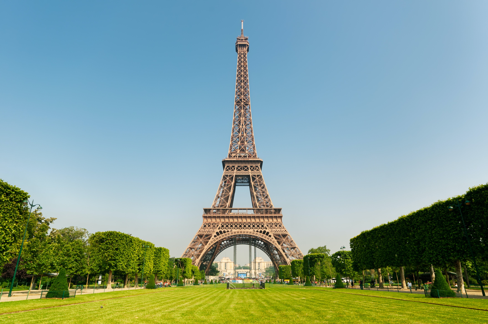
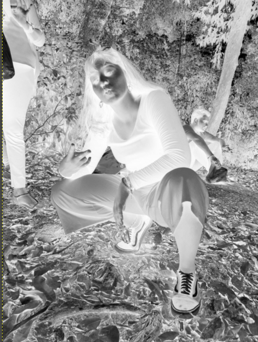
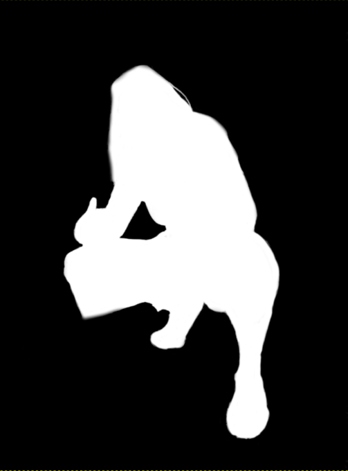

Computer Aided Design
Gimp
Photo Reference:
I first start off by right clicking the image and click on Add Alpha Channel. Once that is done, i want to duplicate the image. After that what i did was i desaturate the image and invert the colours of the top layer, making it look like this:

Once that is done, i then take the paintbrush tool to paint the unwanted background with the colour black and my subject with the colour white as such.

After that I cut the image, press on the original layer and add a layer mask, with white (full opacity) selected. Once that is done i went ahead and pasted my image previously. I then anchored the floating layer so that it will anchor it down to the original layer. Last but not least all i did was just drag the new background image to the layers tab, changing the background. I obviously resize it accordingly to produce the final product below.